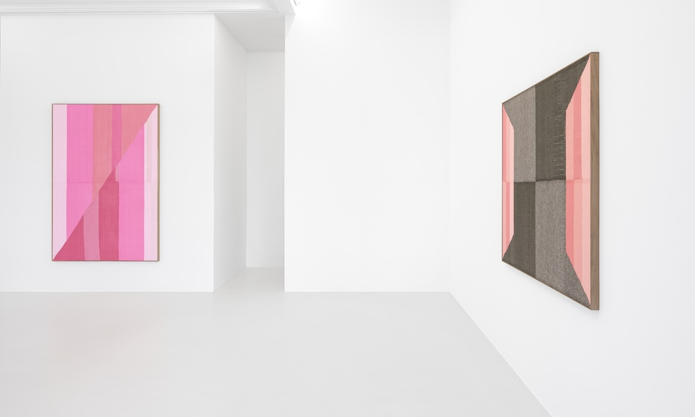
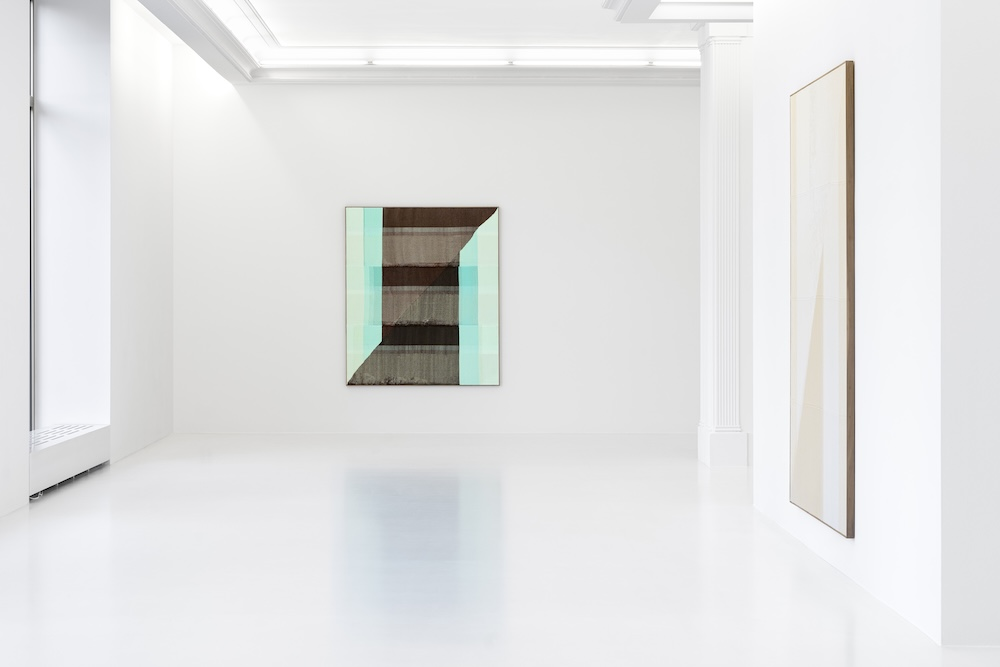
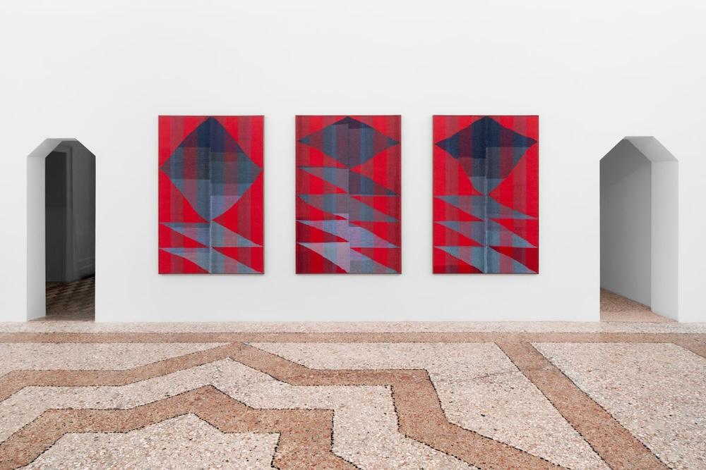

최대한 느리게 ASLSP

페레스프로젝트는 브렌트 웨든(1979년, 캐나다 노바 스코샤)의 《최대한 느리게 ASLSP》을 개최한다. 이는 작가가 갤러리와 함께하는 여섯 번째 개인전이자 베를린에서의 네 번째 전시이다.
아방가르드 작곡가 존 케이지가 1985년에 작곡한 ‘ASLSP’는 음과 음 사이의 간격을 끝없이 늘려, 소리를 정적으로 엮어 연주된다. 브렌트 웨든의 《최대한 느리게》는 이 음악적 코드를 양모, 면, 아크릴 실로 변환해 거대한 기하학적 추상화를 직조해 낸다. 가장 느린 속도로 진행되지는 않지만, 웨든의 작업은 베틀에 앉기 훨씬 전부터 꼼꼼하고 세심하게 시작된다. 크레이그리스트(Craigslist), 이베이(eBay), 페이스북(Facebook) 시장에서 중고 재료나 오래된 실을 찾아내는 과정은 필수적이면서도 하나의 과업으로 여겨진다. 그의 작업은 시간이 많이 소요되기에 아이디어의 시작과 완성 사이의 거리가 더욱 멀어진다. 느림은 의도적이며 필수적인 요소로, 웨든의 작업에서 이미지를 구성하는 핵심 수단이 된다.
브렌트 웨든은 직조공처럼 표면을 구성하지만, 화가처럼 접근하여 자신의 직조물을 회화라고 부른다. 그는 유화로 시작했는데, 초기 회화 작품의 물성이 직물과 유사하다는 점에서 섬유 작업으로 이어졌다. 복잡한 직조 패널을 꿰매서 캔버스에 올린 후, 회화처럼 늘리고 액자에 넣는다. 형태와 색상이 생겨나고 공간을 차지하는 방식은 물감 덩어리나 섞인 붓질과 유사하지만, 그의 작품의 물리적 구조는 표면과 이를 덮는 재료가 동시에 존재하는 점에서 독특하다. 매체 간의 경계가 모호해지고 규율 간의 위기가 해체되는 것이다. 브렌트 웨든의 직조 회화는 체계적으로 숙련된 손과 호기심으로 만지는 손이 조화를 이루는 것처럼 보인다.
이러한 비일관성은 결코 되돌리거나 ‘고정’될 수 없다. 시간을 되돌릴 수 없고, 오직 앞으로 나아갈 수 있다. 브렌트 웨든은 직조할 때 단지 몇 미터 앞만 볼 수 있으며, 완성된 작업물은 베틀 뒤에서 서서히 드러난다. 특정 색의 실이 떨어지기 시작하면 다른 색의 실을 추가하여 작업을 계속한다. 패널이 완성되고 전체 직조가 형태를 드러내야만 모양, 색조, 음영의 변화와 전체적인 구성이 눈에 들어온다. 이런 방식의 직조는 미래에 대한 명확한 개념 없이 현재가 펼쳐지면서 드러나는 것에 가깝다. 여기서 우리는 연주자뿐만 아니라 듣는 사람도 음이 등장하고 머무는 현재에 긴장을 늦추지 않고 묶여 있을 수밖에 없는 케이지의 곡을 다시 만나게 된다. 소리에서든 실에서든 ‘최대한 느리게’라는 것은 바로 지금, 여기를 의미할 수 있다.